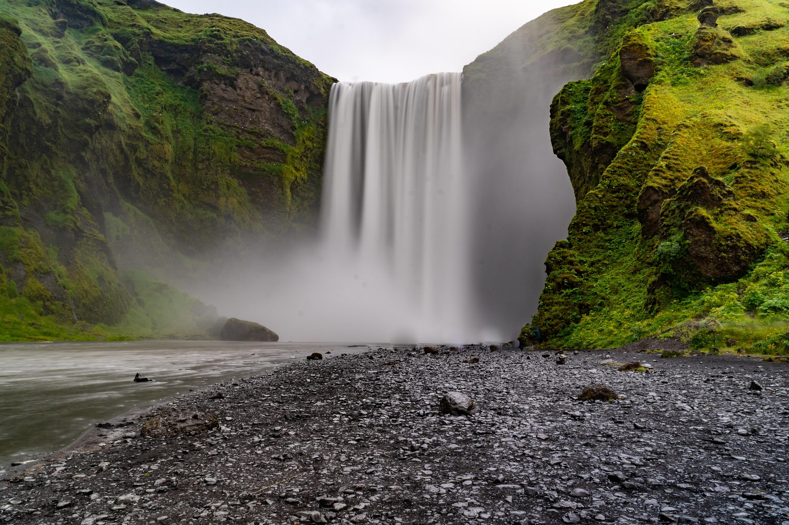

A vízesések olyan természeti képződmények, ahol a folyó vagy patak vize egy magasabb helyről egy alacsonyabb szintre zuhan. A világ számos pontján találhatók gyönyörű vízesések, amelyek turisták millióit vonzzák. Nemcsak látványosak, hanem fontos szerepet játszanak a természetben is.

A világ legmagasabb vízesése az Angel-vízesés Venezuelában, amely 979 méter magas. A Niagara-vízesés ezzel szemben nem a magasságáról, hanem hatalmas vízhozamáról és szélességéről híres. A vízesések hangja akár több kilométerre is elhallatszódhat.
Tudj meg többet!| Vízesés neve | Ország | Magasság |
|---|---|---|
| Angel-vízesés | Venezuela | 979 m |
| Tugela-vízesés | Dél-Afrika | 948 m |
| Tres Hermanas | Peru | 914 m |
A világ 3 legmagasabb vízesése: